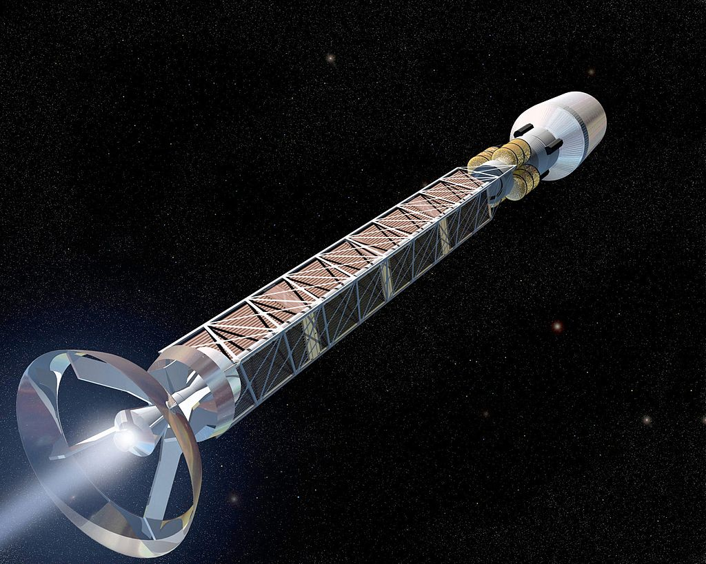

10 kg instrument payload could be sent to 250 AU in 10 years using 30 mg of H' A similar probe could be sent to Alpha Centaur in 40 years using grams of H' Antiprotons directed at uranium sail coating Resulting fission products traveling ≈ 107 m/s Isp ≈ 106 s Antimatter Driven Sail Challenges: Prod
